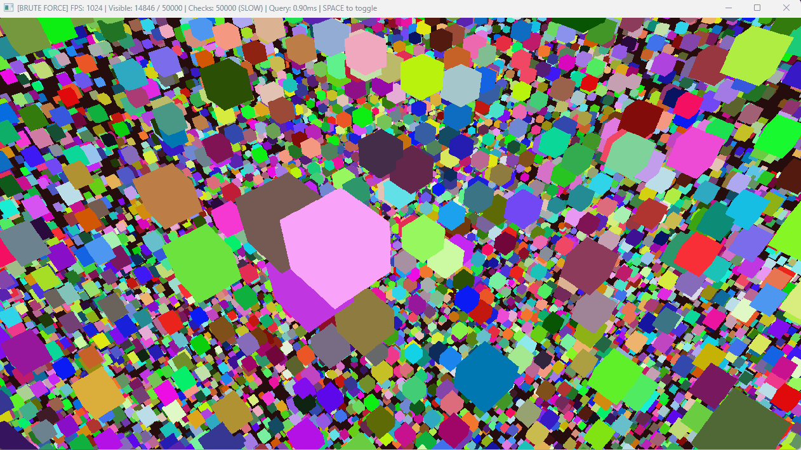
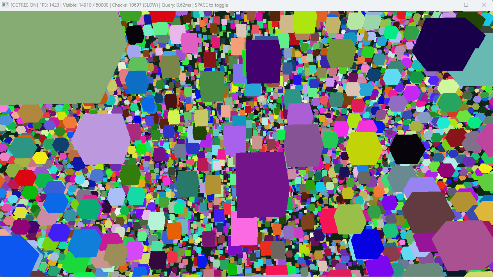

1️⃣ 뭐가 문제야?
RPG 게임에서 몬스터 1000마리가 있어. 플레이어 근처 몬스터만 공격하게 하려면?
가장 쉬운 방법? 전부 검사하는 거지.
// 가장 단순한 방법
for (int i = 0; i < 1000; i++) {
float dist = Distance(player, monsters[i]);
if (dist < attackRange) {
monsters[i].Attack(player);
}
}
// 시간복잡도: O(N) - 몬스터 1000마리 전부 검사
문제: 몬스터가 10,000마리면? 100,000마리면?
그럼 어떻게 해?
공간을 나눠!
상황 1: 몬스터 1000마리 전부 검사
→ 1000번 거리 계산
상황 2: 공간을 4개 구역으로 나눔
→ 플레이어가 있는 구역만 검사
→ 250번만 거리 계산!
→ 4배 빠름!
🏢 비유: 아파트 찾기
친구 집 찾기:
무식한 방법: 서울 전체 아파트 다 돌아다니며 확인
→ 100만 집 전부 방문 (100만 번 검사)
똑똑한 방법: 강남구 → 대치동 → 은마아파트 → 101동
→ 4단계만 내려가면 됨 (4번 검사)
이게 바로 공간 분할 (Spatial Partitioning)이야.
🎬 시각화: 문제 상황

❌ Brute Force: 50,000개 전부 검사 (느림)
→ 평균 1,132 FPS | 검사 50,000번 | 쿼리 0.82ms
🎬 시각화: Octree 해결

✅ Octree: 필요한 부분만 검사 (빠름)
→ 평균 1,496 FPS | 검사 10,545번 | 쿼리 0.60ms
3️⃣ 단계별로 만들어보자
Step 1: 초기 상태 (오브젝트 10개)
전체 공간: 1024x1024
오브젝트: 10개 랜덤 배치
┌─────────────────┐
│ • • │
│ • • │
│ • • • │
│ • • • │
└─────────────────┘
→ 10개 < 최대 개수 (예: 4개)라면 분할 안 함
→ 10개 > 4개니까 분할 시작!
Step 2: 1차 분할 (4개 구역)
┌────────┬────────┐
│ NW(3) │ NE(2) │
│ • • │ │
│ • │ • • │
├────────┼────────┤
│ SW(3) │ SE(2) │
│ • │ • │
│ • • │ • │
└────────┴────────┘
NW: 3개 (4개 이하, 분할 안 함)
NE: 2개 (4개 이하, 분할 안 함)
SW: 3개 (4개 이하, 분할 안 함)
SE: 2개 (4개 이하, 분할 안 함)
→ 모든 구역이 4개 이하니까 완료!
Step 3: 오브젝트 추가 (NW에 5개 더 추가)
┌────────┬────────┐
│ NW(8) │ NE(2) │
│ ••••• │ │
│ ••• • │ • • │
├────────┼────────┤
│ SW(3) │ SE(2) │
│ • │ • │
│ • • │ • │
└────────┴────────┘
NW: 8개 → 4개 초과!
→ NW를 다시 4개로 분할!
Step 4: NW 구역 재분할
┌────┬───┬────────┐
│NW-NW│NW-│ NE(2) │
│ ••• │NE │ │
│─────│ • │ • • │
│NW-SW│NW-│────────┤
│ •• │SE │ SE(2) │
│ • │ • │ • │
│ │ │ • │
├─────┴───┼────────┤
│ SW(3) │ │
│ • │ │
│ • • │ │
└─────────┴────────┘
최종 구조:
- NW → 4개로 분할됨
- NW-NW: 3개
- NW-NE: 1개
- NW-SW: 3개
- NW-SE: 1개
- NE: 2개
- SW: 3개
- SE: 2개
🎯 검색 최적화
플레이어가 NW-NW에 있다면?
무식한 방법: 전체 15개 검사
Quadtree: NW-NW의 3개만 검사!
→ 5배 빠름!
오브젝트 100만 개면?
→ 깊이 20단계 정도면 충분
→ log₄(1000000) ≈ 10단계
→ 100만 번 → 10번 검색!
7️⃣ 실제 게임에서는 어떻게 써?
🎮 사례 1: FPS 게임 - 총알 충돌 검사
문제: 총알 100발 × 적 50명 = 5,000번 검사 (매 프레임!)
Octree 적용:
- 총알이 있는 구역만 검사
- 5,000번 → 150번 검사
- 33배 빠름!
실제 게임: Call of Duty, Battlefield 시리즈
→ 레이캐스팅 + Octree로 총알 충돌 최적화
🎮 사례 2: 오픈월드 - Frustum Culling
문제: GTA 같은 오픈월드에서 건물 100만 개 렌더링?
Octree 적용:
- 카메라 시야(Frustum)에 있는 것만 렌더링
- 100만 개 → 3,000개만 렌더링
- FPS 10 → 60으로 향상
실제 게임: GTA V, Assassin's Creed, Red Dead Redemption
→ 건물, 나무, NPC 렌더링 최적화
🎮 사례 3: 배틀로얄 - 네트워크 동기화
문제: 플레이어 100명 × 100명 = 10,000번 위치 전송?
Quadtree + AOI 적용:
- 근처 플레이어만 동기화
- 10,000번 → 50번 패킷 전송
- 네트워크 대역폭 200배 절감
실제 게임: PUBG, Fortnite, Apex Legends
→ AOI(Area of Interest) 시스템에 Quadtree 활용
🎮 사례 4: RTS 게임 - 유닛 선택
문제: 드래그 박스로 유닛 선택 시 전체 10,000개 검사?
Quadtree 적용:
- 드래그 영역과 겹치는 노드만 검사
- 10,000번 → 80번 검사
- 클릭 반응 속도 125배 향상
실제 게임: 스타크래프트, Age of Empires, Command & Conquer
→ 유닛 선택, 건물 배치, 공격 범위 계산
🎮 사례 5: 마인크래프트 - 블록 관리
문제: 월드 크기 무한대? 블록 수억 개를 어떻게 관리?
Octree 적용:
- 청크(Chunk) 시스템 = Octree 변형
- 빈 공간(공기)은 노드 하나로 압축
- 수억 개 블록 → 수만 개 노드로 압축
실제 게임: Minecraft
→ 청크 로딩, 블록 업데이트, 충돌 검사
🎮 사례 6: MMO - 몬스터 AI
문제: 몬스터 10,000마리가 "가장 가까운 플레이어" 찾기?
Octree 적용:
- 반경 20m 내 플레이어만 검색
- 몬스터당 10,000번 → 5번 검사
- AI 업데이트 2,000배 빠름
실제 게임: World of Warcraft, Final Fantasy XIV
→ 몬스터 어그로, 스킬 범위, 경로 탐색
🎮 사례 7: 레이싱 - 충돌 검사
문제: 자동차 20대 × 장애물 5,000개 = 100,000번 검사?
Octree 적용:
- 자동차 주변만 검사
- 100,000번 → 150번 검사
- 물리 시뮬레이션 666배 빠름
실제 게임: Forza Horizon, Gran Turismo
→ 차량 충돌, 도로 경계, 지형 충돌
🎮 사례 8: 파티클 시스템
문제: 폭발 이펙트 100만 개 파티클 간 충돌?
Octree 적용:
- 근처 파티클만 검사
- 1조 번 → 100만 번 검사
- 파티클 충돌 1,000,000배 빠름
실제 게임: Diablo 시리즈, Path of Exile
→ 스킬 이펙트, 폭발, 물리 파티클
🎮 사례 9: VR/AR - 손 인터랙션
문제: VR에서 손으로 물체 집기 - 10,000개 오브젝트 전부 검사?
Octree 적용:
- 손 주변 30cm만 검사
- 10,000번 → 20번 검사
- VR 프레임 드롭 없이 90 FPS 유지
실제 게임: Half-Life: Alyx, Beat Saber
→ 손 충돌, 오브젝트 집기, 제스처 인식
💡 핵심 패턴
Quadtree/Octree는 "전체 검색을 구역 검색으로" 바꿔주는 마법이야.
공통점:
- 오브젝트가 많을수록 효과 큼
- 범위 검색(Range Query)에 최적화
- 동적 업데이트 가능 (Loose Octree)
실전 조합:
- Octree + Frustum Culling = 렌더링 최적화
- Quadtree + AOI = 네트워크 최적화
- Octree + Raycasting = 물리 최적화
- Quadtree + AI = 게임플레이 최적화